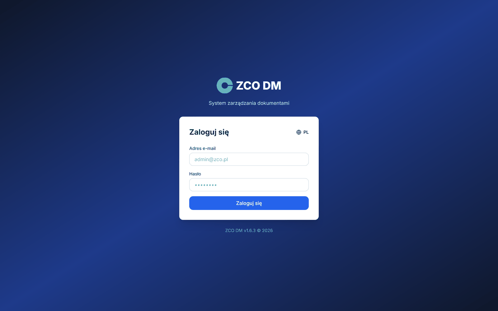
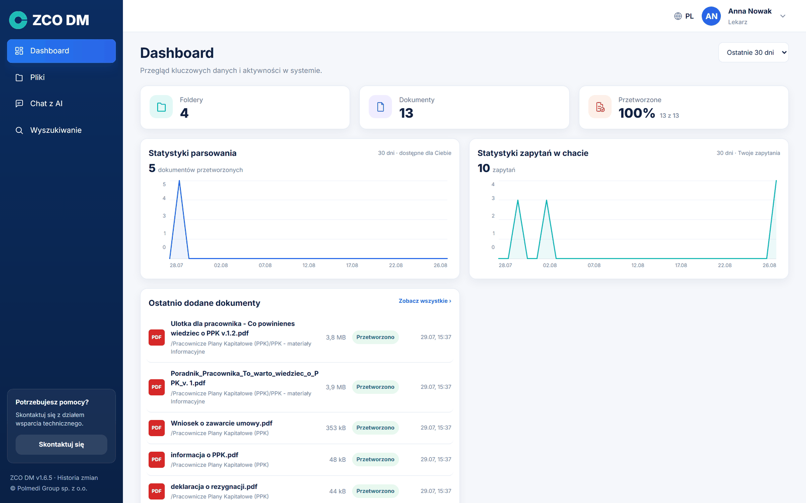
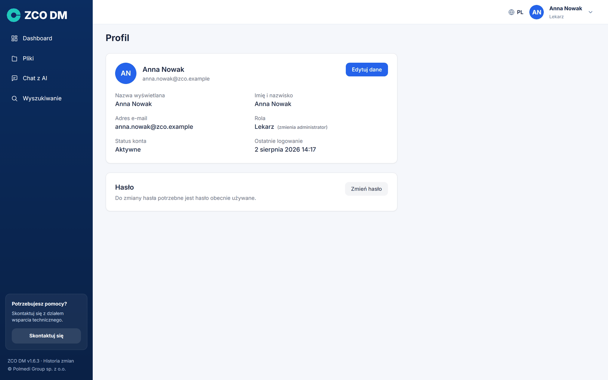
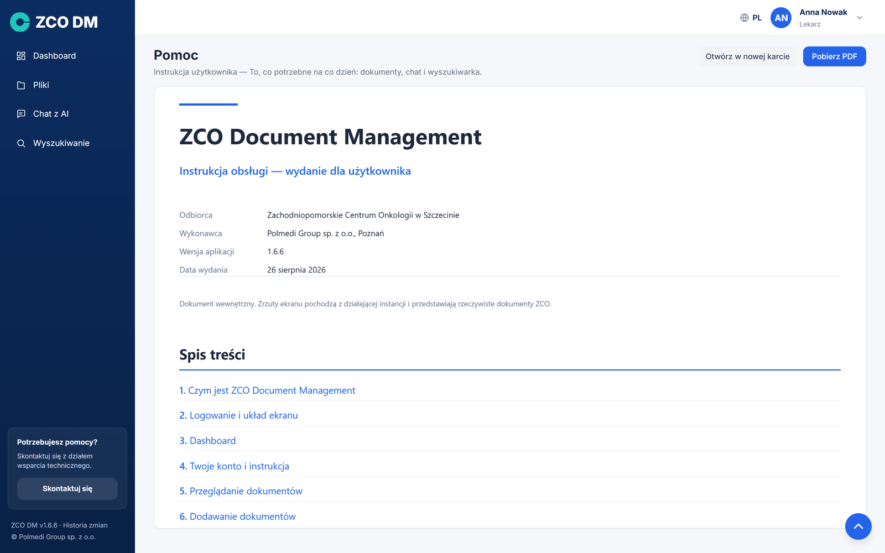
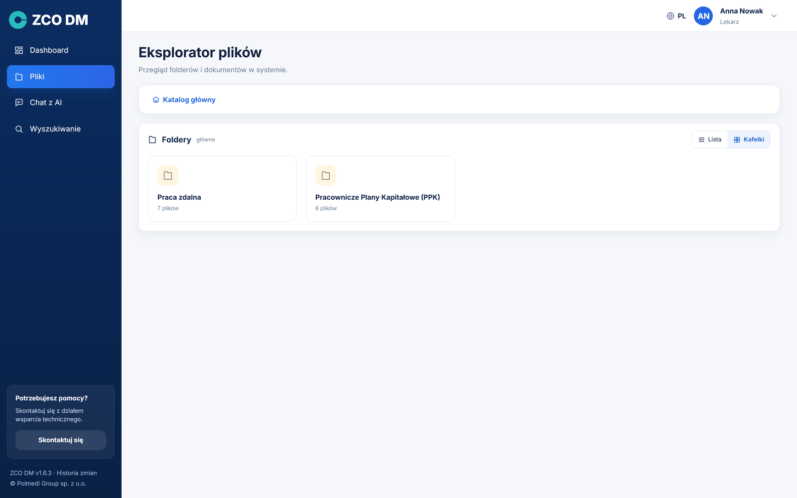
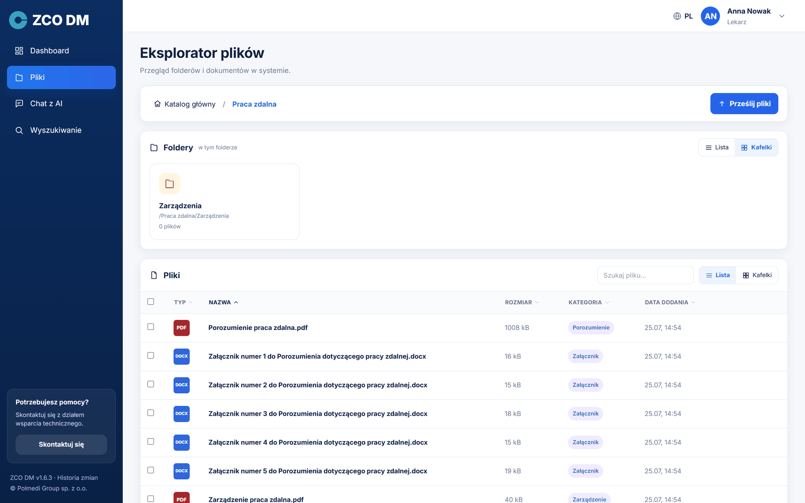
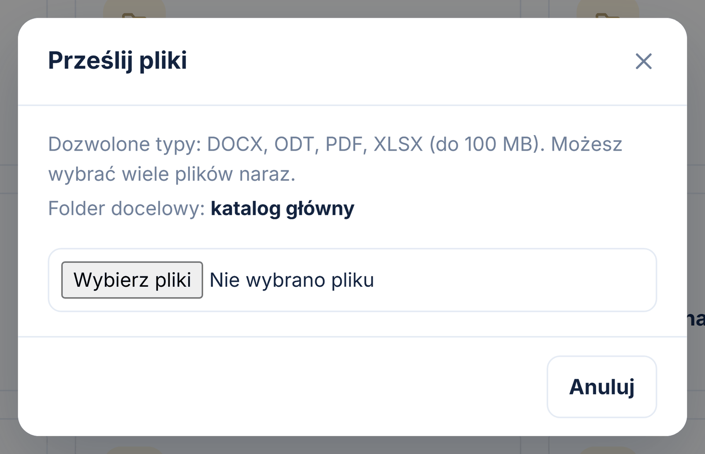
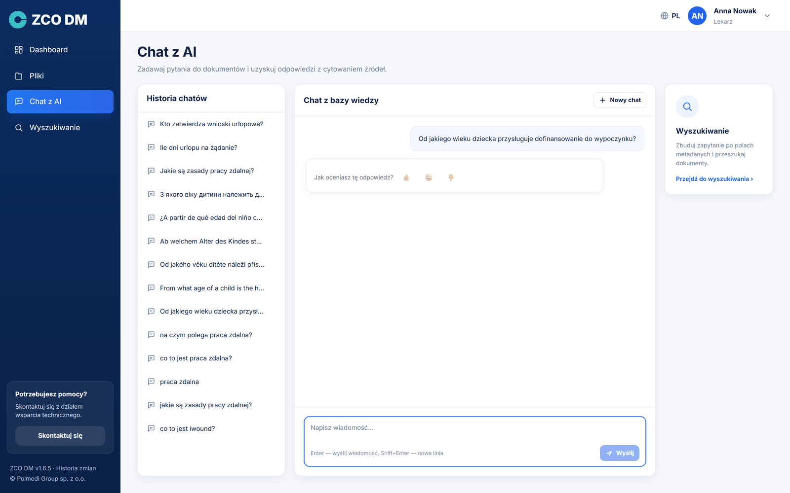
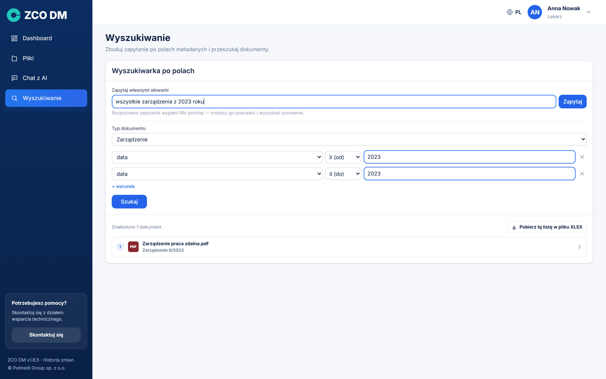
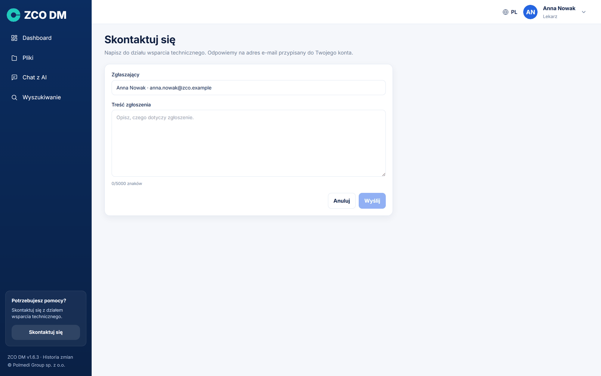

ZCO Document Management (w skrócie ZCO DM) to wewnętrzna baza dokumentów. Aplikacja robi dwie rzeczy naraz: przechowuje dokumenty w uporządkowanej strukturze folderów i pozwala zadawać pytania o ich treść zwykłym językiem, tak jak zapytalibyśmy kolegi, który te dokumenty zna.
Różnica wobec zwykłego dysku sieciowego jest zasadnicza. Na dysku trzeba wiedzieć, w którym pliku szukać. Tutaj wystarczy zapytać „jakie są zasady pracy zdalnej?”, a aplikacja sama znajdzie właściwe fragmenty dokumentów, ułoży z nich odpowiedź i pokaże, z których dokumentów pochodzi każde zdanie.
Aplikacja odpowiada na dwa różne rodzaje pytań i ma na nie dwa osobne ekrany. Chat z AI odpowiada na pytania o treść — „od jakiego wieku dziecka przysługuje dofinansowanie?”. Wyszukiwanie odpowiada na pytania o strukturę — „pokaż wszystkie zarządzenia z 2023 roku”. Rozdzielenie jest celowe: dzięki niemu nie trzeba zgadywać, do którego pola wpisać pytanie.
Każdy dokument przechodzi automatyczne przetwarzanie. Aplikacja odczytuje jego treść (także z tabel), dzieli ją na fragmenty, rozpoznaje rodzaj dokumentu — zarządzenie, procedura, wniosek — i wyciąga z niego pola opisowe, na przykład numer, datę czy osobę zatwierdzającą. Dopiero po tym dokument staje się widoczny dla wyszukiwania i dla czatu.
Przetwarzanie jednego dokumentu trwa zwykle od kilkunastu sekund do kilku minut — zależnie od jego długości i od tego, czy jest to plik tekstowy, czy skan wymagający rozpoznania pisma. Przez ten czas dokument ma status W kolejce lub Przetwarzanie.
Cała aplikacja wraz z modelem językowym działa na serwerze Zachodniopomorskiego Centrum Onkologii. Treść dokumentów ani zadawane pytania nie opuszczają tego serwera i nie są wysyłane do żadnej usługi zewnętrznej. Dostęp do dokumentów wynika z uprawnień nadanych roli, do której należy konto — użytkownik widzi wyłącznie te foldery, które mu udostępniono.
Aplikację otwieramy w przeglądarce internetowej pod adresem podanym przez administratora. Nad formularzem widnieje znak instancji — ikona i nazwa. Logujemy się adresem e-mail i hasłem otrzymanym od administratora; wielkość liter w adresie nie ma znaczenia.

Po zalogowaniu ekran dzieli się na dwie części. Po lewej stronie znajduje się granatowe menu, po prawej — treść wybranej strony. W prawym górnym rogu widoczne są imię i nazwisko oraz kółko z inicjałami, które rozwija menu użytkownika. Na dole menu bocznego widnieje numer wersji aplikacji — będący odnośnikiem do historii zmian — oraz informacja o producencie.
Kliknięcie w znak instancji na szczycie menu zwija je do samych ikon, zostawiając więcej miejsca na treść. Ponowne kliknięcie rozwija menu z powrotem. Wybór jest zapamiętywany między sesjami, więc raz zwinięte menu pozostanie zwinięte także po ponownym zalogowaniu.
Jeżeli ktoś inny widzi w menu dodatkową część pod kreską ADMINISTRACJA, oznacza to, że ma konto administratora. Zwykłe konto tej części aplikacji nie widzi i nie ma do niej dostępu.
Na dole menu jest jeszcze kafelek Potrzebujesz pomocy? z przyciskiem Skontaktuj się — prowadzi do formularza zgłoszenia do wsparcia technicznego (zob. osobny rozdział). Gdy menu nie mieści się na niskim ekranie, przewija się sama lista pozycji; kafelek pomocy i stopka pozostają na swoim miejscu.
Dashboard to ekran startowy. Pokazuje stan bazy dokumentów w liczbach i wykresach, a wszystko na nim dotyczy wybranego zakresu czasu — listy rozwijanej w prawym górnym rogu, z opcjami 7, 30 i 90 dni. Jeden wybór obowiązuje cały ekran, więc kafelki i wykresy zawsze mówią o tym samym okresie.

Cztery kafelki podają liczbę kont, folderów i dokumentów oraz udział dokumentów przetworzonych. Pod liczbą bywa druga linijka z porównaniem do poprzedniego okresu, na przykład ↑ 12,6% wobec poprzednich 30 dni.
Dwa wykresy pokazują dzienną aktywność: liczbę przetworzonych dokumentów i liczbę pytań zadanych czatowi. Najechanie kursorem pokazuje dokładną wartość z danego dnia.
Liczby na Dashboardzie dotyczą tego, co wolno nam zobaczyć. Dokumenty i foldery liczone są w zakresie nadanych uprawnień, a wykres pytań pokazuje wyłącznie pytania zadane z własnego konta. Dwie osoby o różnych uprawnieniach zobaczą więc na tym ekranie różne liczby i jest to zachowanie prawidłowe.
↑ Spis treściKółko z inicjałami w prawym górnym rogu rozwija menu z trzema pozycjami: Profil, Instrukcja i Wyloguj. Menu zamyka się klawiszem Escape albo kliknięciem obok.
Strona Profil pokazuje dane konta: nazwę wyświetlaną, imię i nazwisko, adres e-mail, przypisaną rolę, status konta oraz datę ostatniego logowania.

Przycisk Edytuj dane zamienia trzy pierwsze pozycje w pola formularza. Zapisujemy przyciskiem Zapisz, wycofujemy się przyciskiem Anuluj.
Hasło zmieniamy w osobnej karcie Hasło, przyciskiem Zmień hasło. Formularz prosi o hasło obecnie używane oraz o dwukrotne wpisanie nowego. Nowe hasło musi mieć co najmniej osiem znaków i różnić się od dotychczasowego.
Po udanej zmianie aplikacja wylogowuje i pokazuje ekran logowania — to celowe: od razu sprawdzamy, że nowe hasło działa.
Pozycja Instrukcja otwiera stronę Pomoc z tym dokumentem wprost w aplikacji, bez szukania pliku na dysku. Na górze strony są dwa przyciski: Otwórz w nowej karcie oraz Pobierz PDF. Administrator widzi wydanie pełne, pozostałe konta — wydanie użytkownika, opisujące wyłącznie ekrany, do których mają dostęp.

Ekran Pliki to eksplorator dokumentów. Na górze widnieje ścieżka nawigacji zaczynająca się od Katalogu głównego — kliknięcie dowolnego jej elementu cofa do tego poziomu. Poniżej są dwie karty: Foldery i Pliki.

Zarówno foldery, jak i pliki można oglądać jako listę albo jako kafelki — przełącznik znajduje się w nagłówku każdej z kart, a wybór jest niezależny dla folderów i dla plików. Lista mieści więcej informacji w jednym rzucie oka, kafelki są wygodniejsze, gdy szukamy dokumentu „z pamięci wzrokowej”.

Lista plików pokazuje typ pliku, nazwę, rozmiar, kategorię rozpoznaną przez aplikację oraz datę dodania. Kategoria to rodzaj dokumentu — zarządzenie, procedura, wniosek — i to ona najczęściej pomaga odnaleźć właściwy plik. Dokumenty, których aplikacja nie przypisała do żadnej kategorii, mają w tej kolumnie napis nierozpoznana.
Pole Szukaj pliku nad listą filtruje dokumenty po nazwie w obrębie bieżącego folderu. Pod listą widnieje liczba dokumentów oraz wybór, ile pozycji pokazywać na stronie (10, 25, 50 lub 100).
Kliknięcie wiersza otwiera okno ze szczegółami: typ pliku, rozmiar, status przetwarzania, datę dodania, folder, konto które wgrało dokument oraz rozpoznaną kategorię. Z tego okna można dokument pobrać, a pliki PDF również podejrzeć w nowej karcie.
W katalogu głównym zwykłe konto nie widzi żadnych plików — dokumenty leżące poza folderami są dostępne wyłącznie dla administratora. Widoczne są za to foldery, które udostępniono naszej roli.
↑ Spis treściDokumenty dodajemy przyciskiem Prześlij pliki w prawym górnym rogu strony Pliki. Trafiają one do folderu, który jest w danej chwili otwarty — dlatego najpierw wchodzimy do właściwego folderu, a dopiero potem wgrywamy. Docelowy folder jest zawsze wypisany w oknie wysyłki.

Można zaznaczyć wiele plików naraz. Aplikacja pokazuje wtedy postęp osobno dla każdego z nich, a na końcu podsumowanie: ile plików wgrano i ile zakończyło się błędem.
Aplikacja przyjmuje pliki PDF, DOCX, ODT i XLSX, każdy o rozmiarze do 100 MB. Lista formatów jest widoczna w oknie wysyłki i pochodzi wprost z ustawień aplikacji — jeżeli administrator ją zmieni, okno pokaże nową listę, a systemowe okno wyboru pliku odfiltruje pozostałe rozszerzenia.
Przycisk Prześlij pliki pojawia się tylko w folderach, do których mamy prawo zapisu. W folderach udostępnionych wyłącznie do odczytu widzimy dokumenty i możemy je pobierać, ale nie możemy nic dodać ani usunąć.
↑ Spis treściEkran Chat z AI to miejsce, w którym zadajemy pytania o treść dokumentów. Dzieli się na trzy części: listę wcześniejszych rozmów po lewej, okno rozmowy pośrodku i odsyłacz do wyszukiwarki po prawej.
Pytanie wpisujemy w pole na dole i zatwierdzamy klawiszem Enter; Shift+Enter przechodzi do nowej linii. Odpowiedź pojawia się stopniowo, słowo po słowie — można ją przerwać przyciskiem Zatrzymaj.

Pod każdą odpowiedzią widnieje lista dokumentów użytych w odpowiedzi. Każda pozycja podaje numer odsyłacza, nazwę pliku, stronę i rodzaj dokumentu; kliknięcie otwiera dokument źródłowy. Numery w plakietkach odpowiadają odsyłaczom w treści odpowiedzi, więc widać, które zdanie skąd pochodzi.
Poniżej bywa jeszcze informacja w rodzaju Sprawdzono też 7 dokumentów, które nie zostały wykorzystane wraz z przyciskiem rozwijającym ich listę. To dokumenty, które aplikacja przejrzała, szukając odpowiedzi, ale nie znalazła w nich niczego na temat — warto tam zajrzeć, gdy odpowiedź wydaje się niepełna.
Aplikacja odpowiada wyłącznie na podstawie wgranych dokumentów. Jeżeli nie znajdzie informacji, napisze o tym wprost, zamiast zmyślać. Odpowiedź „nie znaleziono w dokumentach informacji na ten temat” jest zatem informacją o zbiorze dokumentów, a nie usterką.
Pytanie w rodzaju „pokaż wszystkie zarządzenia z 2023 roku” aplikacja rozpoznaje jako prośbę o wypis, nie o odpowiedź z treści. Odpowiada wtedy zdaniem „Znalazłem N dokumentów”, listą tych dokumentów i przyciskiem Pobierz tę listę w pliku XLSX.
Każda rozmowa zapisuje się na liście po lewej stronie i można do niej wrócić. Przycisk Nowy chat zaczyna rozmowę od czysta. Ma to znaczenie: w obrębie jednej rozmowy aplikacja bierze pod uwagę wcześniejsze pytania, więc przy zmianie tematu lepiej zacząć nową.
Wyszukiwanie to osobny ekran w menu. Odpowiada na pytania o strukturę zbioru: „wszystkie zarządzenia z 2023 roku”, „wnioski podpisane przez konkretną osobę”. Czat odpowiada na pytania o treść — te dwie drogi celowo nie są wymieszane.
Najprościej wpisać pytanie zwykłym językiem w pole na górze. Kursor stoi w nim od razu po wejściu na ekran. Aplikacja rozpoznaje z pytania rodzaj dokumentu i warunki, wypełnia nimi formularz poniżej i od razu pokazuje wyniki. Rozpoznany filtr można potem poprawić ręcznie i wyszukać ponownie.

Formularz składa się z rodzaju dokumentu i dowolnej liczby warunków. Warunek to pole opisowe, operator (zawiera, równe, od, do, po, przed) i wartość. Lista dostępnych pól zależy od wybranego rodzaju dokumentu — pochodzi wprost ze schematów dokumentów.
Wyniki wyglądają tak samo jak lista dokumentów pod odpowiedzią czatu: numer, nazwa pliku i rodzaj dokumentu. Strony tu nie ma — wynikiem jest cały plik, a nie jego fragment. Kliknięcie otwiera dokument. Nad listą jest przycisk Pobierz tę listę w pliku XLSX — arkusz zawiera komplet pól opisowych, z kolumnami w kolejności ustalonej w schemacie dokumentu.
Kafelek Potrzebujesz pomocy? na dole menu bocznego prowadzi do formularza zgłoszenia do wsparcia technicznego. Wystarczy opisać sprawę i wysłać — nadawca i instancja dołączane są automatycznie, a odpowiedź trafi na adres e-mail przypisany do konta.

Zgłoszenie idzie pocztą, a nie przez mechanizm przetwarzania dokumentów. Jest to celowe: awaria przetwarzania nie może odcinać drogi zgłoszenia problemu, bo właśnie wtedy zgłoszenia są najbardziej potrzebne.
Poniżej najczęstsze sytuacje zgłaszane przy pierwszym kontakcie z aplikacją.
| Sytuacja | Co zrobić |
|---|---|
| Wgrałem dokument, ale czat go nie zna. | Sprawdzić status na liście plików. Dopóki nie jest Przetworzono, dokument nie bierze udziału w wyszukiwaniu. Przy długich dokumentach przetwarzanie trwa kilka minut. |
| Czat odpowiada, że nie znalazł informacji. | Najczęściej pytanie dotyczy dokumentu, którego nie ma w bazie, albo dokument nie jest jeszcze przetworzony. Warto też zadać pytanie inaczej — pełnym zdaniem. |
| Nie widzę folderu, o którym mówi współpracownik. | Foldery są udostępniane rolom. Jeżeli brakuje dostępu, należy poprosić administratora o nadanie uprawnienia do tego folderu. |
| Aplikacja wylogowała mnie sama. | Po okresie bezczynności ustalonym przez administratora sesja wygasa. Wystarczy zalogować się ponownie. |
| Nie mogę wgrać pliku — okno wyboru go nie pokazuje. | Aplikacja przyjmuje formaty PDF, DOCX, ODT i XLSX. Pliki w innych formatach trzeba najpierw zapisać w jednym z nich. |
| Nie mogę się zalogować nazwą użytkownika. | Do logowania służy wyłącznie adres e-mail przypisany do konta. Nazwa użytkownika jest tylko nazwą wyświetlaną. |
| Zapomniałem hasła. | Nowe hasło ustawia administrator w module Użytkownicy. Po zalogowaniu warto zmienić je na własne na stronie Profil. |
| Gdzie znajdę tę instrukcję w aplikacji? | Pod kółkiem z inicjałami w prawym górnym rogu, pozycja Pomoc. Stamtąd można ją też pobrać jako PDF. |
| Pojęcie | Znaczenie |
|---|---|
| Chat z AI | Ekran, na którym zadajemy pytania o treść dokumentów. |
| Wyszukiwanie | Ekran, na którym filtrujemy dokumenty po polach opisowych. |
| Chat / czat | Rozmowa z aplikacją prowadzona zwykłym językiem. |
| Fragment (chunk) | Kawałek dokumentu, na jakie aplikacja dzieli treść, żeby precyzyjnie wskazywać źródło odpowiedzi. |
| Parsowanie | Odczytanie treści dokumentu i przygotowanie jej do wyszukiwania. |
| Pole opisowe | Informacja opisująca dokument — numer, data, osoba zatwierdzająca. |
| Rodzaj dokumentu | Kategoria rozpoznana automatycznie: zarządzenie, procedura, wniosek i inne. |
| Rola | Grupa uprawnień przypisana kontu — to rolom, a nie osobom, udostępnia się foldery. |
| Źródło | Dokument i strona, z których pochodzi dany fragment odpowiedzi. |